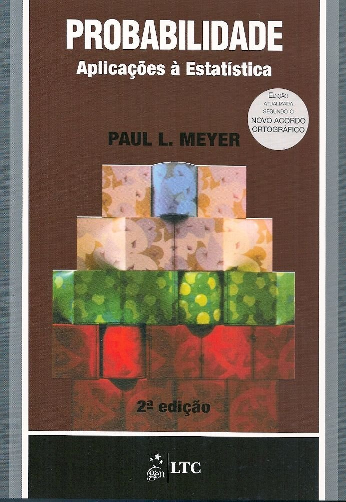
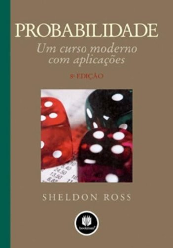
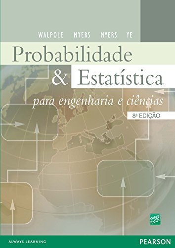
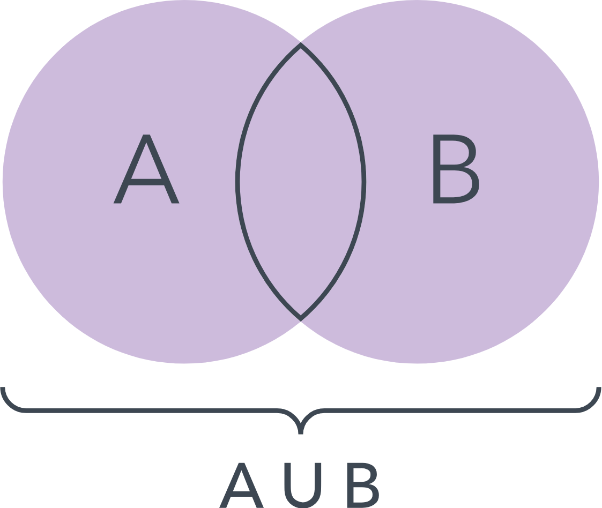
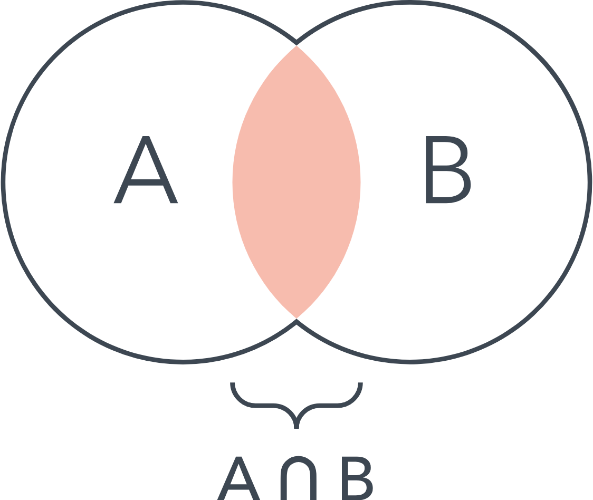
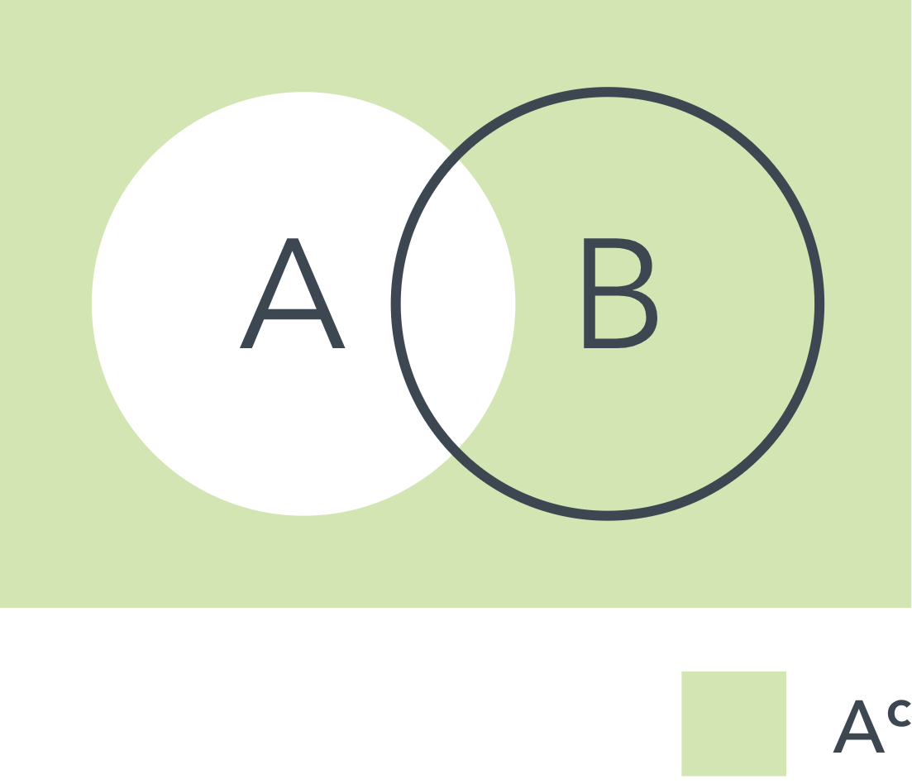

Apresentação da Disciplina e Conceitos Iniciais
ESTAT0072 – Probabilidade I
Prof. Dr. Sadraque E. F. Lucena
sadraquelucena@academico.ufs.br
- Material da disciplina: http://tiny.cc/Prob12025-1
- Grupo no WhatsApp: http://tiny.cc/WppProb1
Informações da disciplina
- Componente curricular: ESTAT0072 – Probabilidade I
- Vagas Reservadas: Estatística
- Carga horária: 60 horas (4 créditos)
- Horário:
- Terças – 20h45 às 22h15
- Quintas – 19h00 às 20h30
- Docente: Prof. Dr. Sadraque E. F. Lucena
Objetivos
Capacitar o aluno na utilização e compreensão da teoria probabilística.
Identificar e reconhecer os problemas que necessitam da utilização de
- distribuições de probabilidade;
- distribuições condicionadas;
- variáveis aleatórias e funções de variáveis aleatórias.
Ementa
- Revisão básica de teoria dos conjuntos
- Técnicas de contagem
- Modelo probabilístico para um experimento aleatório
- Espaços de probabilidade
- Axiomas de Kolmogorov
- Probabilidade condicional e independência
- Função de distribuição de variáveis aleatórias discretas.
Conteúdo programático
Modelo Probabilístico para um experimento aleatório
1.1. Experimento Aleatório
1.2. Espaço Amostral
1.3. Evento
Revisão básica de teoria de conjuntos
2.1. Conjuntos, elementos
2.2. Operações entre conjuntos
Técnicas de Contagem
3.1. Permutação ou Arranjo simples e com repetição
3.2. Permutação Circular
3.3. Combinação simples e com repetição
Conteúdo programático
Definições e espaços de Probabilidade
4.1. Classes de Conjuntos: sigma-álgebra
4.2. Definições de Probabilidade
4.3. Definição frequentista
4.4. Definição Geométrica
4.5. Definição Clássica
4.6. Axiomas de Kolmogorov
Conteúdo programático
Probabilidade Condicional e Independência
5.1. Probabilidade condicional
5.2. Regra do Produto de Probabilidades
5.3. Lei da Probabilidade Total
5.4. Diagrama de árvore
5.5. Partição do espaço amostral
5.6. Teorema de Bayes
5.7. Independência de dois eventos
5.8. Independência de vários eventos
Conteúdo programático
Variável aleatória discreta
6.1. Função de distribuição de variáveis aleatórias discretas
6.2. Variável Aleatória Discreta
6.3. Função de Probabilidade e suas propriedades
6.4. Função de Distribuição ou Função Acumulada de probabilidade
6.5. Esperança e Variância de uma V.A.D.
6.6. Variável Aleatória Discreta: Bidimensional
Bibliografia Recomendada



Metodologia
- 2 encontros semanais, com 90 minutos de aula presencial cada
- 30 minutos de atividades extraclasse (hora-trabalho) para cada aula, indicadas pelo docente
Datas Importantes
Avaliações
- Avaliação 1: 17/06/2025 (terça)
- Avaliação 2: 24/07/2025 (quinta)
- Avaliação 3: 28/08/2025 (quinta)
- Avaliação Repositiva: 02/09/2025 (terça)
Não haverá aula
- 19/06/2025: Corpus Christi (ponto facultativo)
- 24/06/2025: São João (feriado municipal)
- 08/07/2025: Independência de Sergipe (feriado estadual)
Teoria dos Conjuntos
Definição 1.1: Conjunto
- Um conjunto é uma coleção de objetos.
- Usualmente são representados por letras maiúsculas (\(A\), \(B\) etc.).
Conjunto
Um conjunto \(A\) pode ser escrito de três maneiras:
Podemos fazer uma lista de elementos de \(A\).
- Exemplo: \(A=\{1,2,3,4\}\) descreve o conjunto formado pelos inteiros positivos \(1\) , \(2\), \(3\) e \(4\).
Podemos descrever o conjunto \(A\) por meio de palavras.
- Exemplo: \(A\) é formado por todos os números reais entre 0 e 1, inclusive.
Podemos escrever o conjunto \(A\) assim: \(A=\{x\,|\, 0\leq x\leq1\}\).
- Isto é, \(A\) é o conjunto de todos os \(x\), onde \(x\) é um número real entre 0 e 1.
Conjunto
Os objetos que individualmente formam a coleção ou conjunto \(A\) são denominados membros ou elementos de \(A\).
- Quando \(a\) for elemento de \(A\), escrevemos \(a\in A\).
- Quando \(a\) não for elemento de \(A\), escrevemos \(a\notin A\).
Definição 1.2: Conjunto Fundamental
- Definimos o conjunto fundamental ou universo de todos os objetos que estejam sendo estudados.
- Este conjunto é, em geral, representado pela letra \(U\).
Definição 1.3: Conjunto Vazio
- Definimos o conjunto vazio ou nulo como o conjunto que não contenha qualquer elemento.
- Exemplo: o conjunto dos números reais \(x\) que satisfaçam à equação \(x^2+1=0\).
- Geralmente se representa o conjunto vazio por \(\emptyset\).
Definição 1.4: Subconjunto
Um conjunto \(A\) é subconjunto de \(B\) se o conjunto \(A\) implica no conjunto \(B\).
Representação: \(A\subset B\).
Dois conjuntos \(A\) e \(B\) são iguais se, e somente se, eles contiverem os mesmos elementos.
- \(A=B \Leftrightarrow A\subset B\) e \(B\subset A\).
Propriedades Imediatas
- Para todo conjunto \(A\), temos que \(\emptyset\subset A\).
- Desde que se tenha definido o conjunto fundamental, então, para todo conjunto \(A\), considerado composição de \(U\), teremos \(A\subset U\).
Exemplo
Suponha que \(U=\) todos os números reais, \(A=\{x|x^2+2x-3=0\}\), \(B=\{x|(x-2)(x^2+2x-3)=0\}\) e \(C=\{x|x=-3,1,2\}\).
- Então, \(A\subset C\) e \(B=C\).
- Veremos agora operações sobre conjuntos.
Definição 1.5: União
- Sejam \(A\) e \(B\) dois conjuntos.
- Definimos \(C\) como a união de \(A\) e \(B\) (algumas vezes denominada soma de \(A\) e \(B\)) da seguinte maneira: \[ C = \{x\, |\, x\in A \text{ ou } x\in B \text{ (ou ambos)}\}. \]
- Portanto, \(C\) será formado de todos os elementos que estejam em \(A\), ou em \(B\), ou em ambos.
- Notação: \(C=A\cup B\).
Definição 1.6: Interseção
- Sejam \(A\) e \(B\) dois conjuntos.
- Definimos \(D\) como a interseção de \(A\) e \(B\) (algumas vezes denominada produto de \(A\) e \(B\)) da seguinte maneira: \[ D = \{x|x\in A \text{ e } x\in B\}. \]
- Assim, \(D\) será formado pelos elementos que estão em \(A\) e em \(B\).
- Notação: \(D=A\cap B\).
Definição 1.7: Complementar
- O complementar de um conjunto \(A\) é constituído por todos os elementos que não estejam em \(A\), mas estejam no conjunto fundamental \(U\), isto é, \[ A^{\mathsf{c}} = \{x|x\notin A\}. \]
- Notação: \(A^{\mathsf{c}}\).
- Pode-se utilizar a notação \(\overline{A}\) para definir o complementar de \(A\).
- Uma forma de visualizarmos operações sobre conjuntos é por meio do Diagrama de Venn:



- As operações de união e interseção podem ser estendidas, intuitivamente, para qualquer número finito de conjuntos.
- Definimos \(A\cup B\cup C\) como \(A\cup (B\cup C)\) ou \((A\cup B)\cup C\).
- Analogamente, definimos \(A\cap B\cap C\) como \(A\cap (B\cap C)\) ou \((A\cap B)\cap C\).
- Podemos continuar essas composições para qualquer número finito de conjuntos.
Exemplo 1.1
Suponha que \(U=\{1,2,3,4,5,6,7,8,9,10\}\), \(A=\{1,2,3,4\}\) e \(B=\{3,4,5,6\}\). Determine
\(A^{\mathsf{c}}\)
\(A\cup B\)
\(A\cap B\)
Leis Comutativas
\(A\cup B = B\cup A\)
\(A\cup (B \cup C) = (A\cup B) \cup C\)
Leis Associativas
\(A\cap B = B\cap A\)
\(A\cap (B \cap C) = (A\cap B) \cap C\)
Outras identidades de Conjuntos
\(A\cup (B\cap C) = (A\cup B) \cap (A\cup C)\)
\(A\cap (B\cup C) = (A\cap B) \cup (A\cap C)\)
\(A\cap \emptyset = \emptyset\)
\(A\cup \emptyset = A\)
\((A\cap B)^{\mathsf{c}} = A^{\mathsf{c}} \cup B^{\mathsf{c}}\)
\((A\cup B)^{\mathsf{c}} = A^{\mathsf{c}} \cap B^{\mathsf{c}}\)
\((A^{\mathsf{c}})^{\mathsf{c}} = A\)
- g e h mostram que \(\emptyset\) se comporta entre os conjuntos (relativamente às operações \(\cup\) e \(\cap\)) da maneira que o zero (com relação às operações de adição e multiplicação) o faz entre os números.
Produto Cartesiano
- Sejam \(A\) e \(B\) dois conjuntos.
-O produto cartesiano de \(A\) e \(B\), denotado por \(A\times B\), é o conjunto de todos os pares ordenados nos quais o primeiro elemento é tirado e \(A\) e o segundo, de \(B\). Ou seja, \[ A\times B = \{(a,b), a\in A, b\in B\}. \]
Exemplo
Suponha que \(A=\{1,2,3\}\) e \(B=\{1,2,3,4\}\). Então, \[ A\times B = \{(1,1),(1,2),\ldots,(1,4),(2,1),\ldots,(2,4),(3,1),\ldots,(3,4)\}. \]
Em geral, \(A\times B\neq B\times A\).
A notação pode ser estendida da seguinte maneira:
- Se \(A_1,A_2,\ldots,A_n\) forem conjuntos, então, \[A_1\times A_2\times \cdots\times A_n = \{(a_1, a_2,\ldots,a_n), a_i\in A_i, i=1,\ldots,n\}.\]
- Ou seja, o conjunto de todas as ênuplas ordenadas.
- Se existir um número finito de elementos no conjunto \(A\), digamos \(a_1, a_2,\ldots,a_n\), diremos que \(A\) é finito.
- Se existir um número infinito de elementos em \(A\) que possam ser postos em correspondência biunívoca com os inteiros positivos, diremos que \(A\) é numerável ou infinito enumerável.
- Se os elementos do conjunto \(A\) não puderem ser enumerados, ele é dito infinito não numerável.
Exemplo 1.3
Suponha que o conjunto fundamental seja formado pelos inteiros positivos de 1 a 10. Sejam \(A = \{2, 3, 4\}\), \(B = \{3, 4, 5\}\) e \(C = \{5, 6, 7\}\). Enumere os elementos do conjunto \(A \cap (B\cup C)^c\).
Exemplo 1.4
Suponha que o conjunto fundamental \(U\) seja formado por \(U = \{x ~|~ 0 \leq x \leq 2\}\). Sejam os conjuntos \(A\) e \(B\) definidos da forma seguinte: \(A = \{x ~|~ 1/2 < x \leq 1\}\) e \(B = \{x ~| ~1/4 \leq x < 3/2\}\). Descreva o conjunto \((A\cup B)^c\).
Exemplo 1.5
Quais relação \((A \cup B) \cap (A \cup C) = A \cup (B \cap C)\) é verdadeira?
Exemplo 1.6
Suponha que o conjunto fundamental seja formado por todos os pontos \((x, y)\) de coordenadas ambas inteiras, e que estejam dentro ou sobre a fronteira do quadrado limitado pelas retas \(x = 0\), \(y = 0\), \(x = 6\) e \(y = 6\). Enumere os elementos do conjunto \(A = \{(x, y) ~|~ x^2 + y^2 \leq 6\}\).
Exemplo 1.7
Empregue o diagrama de Venn para estabelecer a relação \(A \subset B\) e \(B \subset C\) implica que \(A \subset C\).
Fim